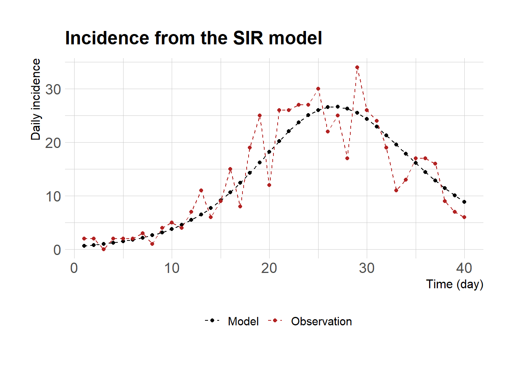
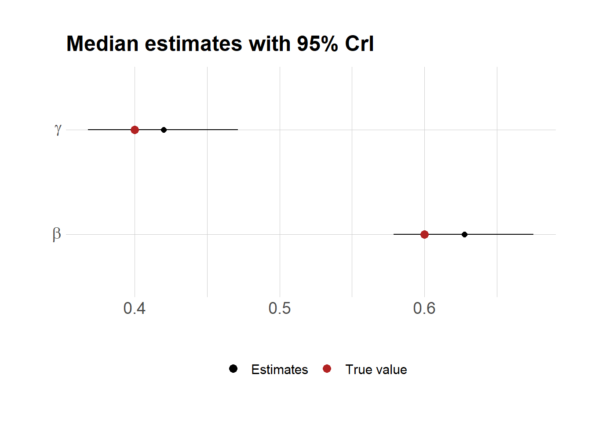

Stan은 통계 모형 뿐 아니라 ODE 모형을 시물레이션하고 모수를 추정하는 데에도 유용하다. 이 포스팅에서는 일별 감염자 자료가 주어졌을 경우 Stan을 이용하여 SIR 모형의 두 개의 모수 (\(\beta, \gamma\))를 추정하는 과정을 기술하겠다. 먼저 deSolve 패키지 양식을 따라 SIR 모형을 아래와 같이 구현하고 모형에서 예측되는 일별 감염자 자료 (dayinc) 를 평균으로 하는 거짓 관찰값을 만든다 (yobs).
sir <-function(t, state, parameters) {with(as.list(c(state, parameters)),{# rate of change N <- S + I + R dS <-- beta*S*I/N dI <-+ beta*S*I/N - gamma*I dR <-+ gamma*I dCI <-+ beta*S*I/N # return the rate of changelist(c(dS, dI, dR, dCI)) }) # end with(as.list ...}y0 <-c(S=999, I=1, R=0, CI=0)parms <-c(beta=0.6, gamma=0.4)times <-seq(0, 40, by =1)library(dplyr)deSolve::ode(y=y0, times=times, func=sir, parms=parms) %>%as.data.frame() -> outdayinc <-diff(out$CI)set.seed(42)yobs <-rpois(length(dayinc), lambda=dayinc)df <-data.frame(time=1:length(dayinc), model=dayinc,obs=yobs)library(ggplot2)# the ggplot theme was adopted from the following website: https://mpopov.com/tutorials/ode-stan-r/theme_set(hrbrthemes::theme_ipsum_rc(base_size=14, subtitle_size=16, axis_title_size=12))ggplot(df)+geom_line(aes(time, model, color="Model"), linetype="dashed")+geom_point(aes(time, model, color="Model"))+geom_line(aes(time, obs, color="Observation"), linetype="dashed")+geom_point(aes(time, obs, color="Observation"))+labs(x="Time (day)", y="Daily incidence", title="Incidence from the SIR model")+scale_color_manual("", values=c("Model"="black","Observation"="firebrick"))+theme(legend.position="bottom")

아래와 같이 Stan 모형을 만든다. Posterior predictive check 을 하기 위해 generated quantities 블록에 ypred 변수를 넣었다.
stan_code <-"functions { vector sir(real t, // time vector y, // state vector theta // parameters ) { vector[4] dydt; real S = y[1]; real I = y[2]; real R = y[3]; real N = S + I + R; real beta = theta[1]; real gamma = theta[2]; dydt[1] = - beta * S * I / N; dydt[2] = beta * S * I / N - gamma * I; dydt[3] = gamma * I; dydt[4] = beta * S * I / N; return dydt; }}data { int<lower=1> T; real t0; array[T] real ts; vector[4] y0; int y_obs[T];}parameters { vector<lower=0>[2] theta; // [beta, gamma]}model { array[T] vector[4] mu = ode_rk45(sir, y0, t0, ts, theta); real dayinc[T]; // daily incidence dayinc[1] = mu[1, 4] + 1e-12; for (t in 2:T){ dayinc[t] = mu[t, 4] - mu[t-1, 4] + 1e-12; } theta ~ exponential(1); // both parameters are on the positive real line y_obs ~ poisson(dayinc); // likelihood}generated quantities { array[T] vector[4] mu = ode_rk45(sir, y0, t0, ts, theta); real dayinc[T]; dayinc[1] = mu[1, 4] + 1e-12; for (t in 2:T){ dayinc[t] = mu[t,4] - mu[t-1,4] + 1e-12; } int ypred[T]; // posterior predictive for (t in 1:T) { ypred[t] = poisson_rng(dayinc[t]); }}"
아래와 같이 Stan 모형을 이용해서 샘플링을 한다.
library(rstan)options(mc.cores = parallel::detectCores())rstan_options(auto_write =TRUE)# this is for the stan model in a separate file# mod <- stan_model(file=paste0(getwd(),"/stan/sir_stan.stan"),# verbose=TRUE)mod <-stan_model(model_code=stan_code, verbose=TRUE)T <-40# end time unit for the ODE model, also the number of data pointsdata <-list(T=T, t0=0.0, ts=1:T, y0=c(999,1,0,0), y_obs=yobs)smp <-sampling(object=mod, data=data, seed=42, chains=4, iter=2000)# saveRDS(smp, "outputs/stan_smp_20230801.rds")
모수의 posterior 분포를 살펴보자.
# smp <- readRDS("outputs/stan_smp_20230801.rds")smp <-readRDS("stan_smp_20230801.rds") # file is under the content/post/the_relevant_post_name/index_files/figure_htmldf <-as.data.frame(smp)pr <-c(0.5,0.025,0.975)d <-as.data.frame(t(apply(df[,grepl("^theta.*", names(df))],2, quantile, probs=pr)))d$name <-c("beta", "gamma")d$true <-c(0.6, 0.4)ggplot(d)+geom_errorbar(aes(x=name, ymin=`2.5%`, ymax=`97.5%`), width=0.0)+geom_point(aes(x=name, y=`50%`, color="Estimates"), size=2)+geom_point(aes(x=name, y=true, col="True value"), size=3)+scale_color_manual(values=c("Estimates"="black","True value"="firebrick"))+labs(x="", y="", title="Median estimates with 95% CrI")+theme(legend.position="bottom", legend.title=element_blank())+scale_x_discrete(breaks=c("beta","gamma"),labels=c(expression(beta),expression(gamma)))+coord_flip()

마지막으로 posterior predictive check을 통해서 모수 추정을 위해 사용했던 자료와 비교해 보자.